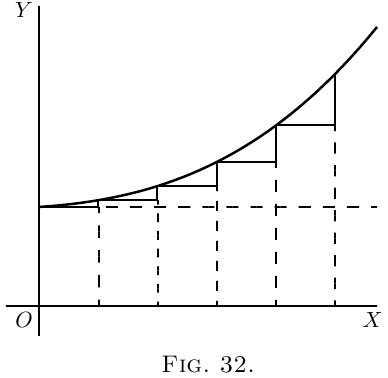

 假设斜率不变，如 图 31 所示。
此处，$\dfrac{dy}{dx}$ 的值为常量。
但是，假设一种情况，如 图 32 中那样，斜率本身在向上增大，则 $\dfrac{d\left(\dfrac{dy}{dx}\right)}{dx}$，即 $\dfrac{d^2y}{dx^2}$ 将为*正*。
如果斜率在向右移动时减小（如 图 14 中那样），或者如 图 33 中所示，那么即使曲线可能正在向上移动，由于变化会减小其斜率，其 $\dfrac{d^2y}{dx^2}$ 将为*负*。
现在是时候让您了解另一个秘密——如何判断您通过“等于零”获得的结果是最大值还是最小值。技巧如下：在您进行微分之后（以获得使之等于零的表达式），然后再次进行微分，并查看第二次微分的结果是*正*还是*负*。如果 $\dfrac{d^2y}{dx^2}$ 的结果为*正*，那么您就知道您得到的 $y$ 的值是一个*最小值*；但如果 $\dfrac{d^2y}{dx^2}$ 的结果为*负*，那么
您得到的 $y$ 的值必须是*最大值*。这就是规则。
其原因应该很明显。想一下任何有最小点的曲线（如 图 15），或如 图 34，其中最小 $y$ 的点标记为 $M$，并且该曲线向上*凹陷*。在 $M$ 的左侧，斜率向下，即为负，并且越来越小。在 $M$ 的右侧，斜率已变为向上，并且变得越来越向上。显然，当曲线穿过 $M$ 时，斜率的变化使得 $\dfrac{d^2y}{dx^2}$ 为*正*，因为其运算，随着 $x$ 向右增加，是将向下斜率转换为向上斜率。
类似地，考虑一下任何有最大点的曲线（如 图 16），或如 图 35，其中曲线为*凸*，并且最大点标记为 $M$。在这种情况下，当曲线从左向右穿过 $M$ 时，其向上斜率转换为
向下或负斜率，因此在这种情况下，“斜率的斜率” $\dfrac{d^2y}{dx^2}$ 为*负*。
现在回到上一章的示例，并以这种方式验证关于任何特定情况下是否存在最大值或最小值的结论。您将在下面找到一些已解决的示例。
(1) 求出
\begin{align*}
\text{(a)}\quad y &= 4x^2-9x-6; \qquad \text{(b)}\quad y = 6 + 9x-4x^2; \\
\end{align*}
的最大值或最小值，并确定它在每种情况下是最大值还是最小值。
\begin{align*}
\text{(a)}\quad \dfrac{dy}{dx}
&= 8x-9=0;\quad x=1\tfrac{1}{8},\quad \text{且 } y = -11.065.\\
\dfrac{d^2y}{dx^2}
&= 8;\quad \text{它是 $+$; 因此它是最小值。} \\
\text{(b)}\quad {\dfrac{dy}{dx}}
&= 9-8x=0;\quad x = 1\tfrac{1}{8};\quad \text{且 } y = +11.065.\\
\dfrac{d^2y}{dx^2}
&= -8;\quad \text{它是 $-$; 因此它是最大值。}
\end{align*}
(2) 求函数 $y = x^3-3x+16$ 的极大值和极小值。
\begin{align*}
\dfrac{dy}{dx}
&= 3x^2 - 3 = 0;\quad x^2 = 1;\quad \text{且 } x = ±1.\\
\dfrac{d^2y}{dx^2}
&= 6x;\quad \text{对于 $x = 1$；它是 $+$}；
\end{align*}
因此 $x=1$ 对应于最小值 $y=14$。对于 $x=-1$，它是 $-$; 因此 $x=-1$ 对应于最大值 $y=+18$。
(3) 求 $y=\dfrac{x-1}{x^2+2}$ 的极大值和极小值。
\[
\frac{dy}{dx} = \frac{(x^2+2) × 1 - (x-1) × 2x}{(x^2+2)^2}
= \frac{2x - x^2 + 2}{(x^2 + 2)^2} = 0;
\]
或 $x^2 - 2x - 2 = 0$，其解为 $x =+2.73$ 和
$x=-0.73$。
\begin{align*}
\dfrac{d^2y}{dx^2}
&= - \frac{(x^2 + 2)^2 × (2x-2) - (x^2 - 2x - 2)(4x^3 + 8x)}{(x^2 + 2)^4} \\
&= - \frac{2x^5 - 6x^4 - 8x^3 - 8x^2 - 24x + 8}{(x^2 + 2)^4}.
\end{align*}
分母始终为正，因此足以确定分子的符号。
如果我们令 $x = 2.73$，则分子为负；最大值，$y = 0.183$。
如果我们令 $x=-0.73$，则分子为正；最小值，$y=-0.683$。
(4) 处理某个工厂产品的费用 $C$ 随每周产量 $P$ 而变化，根据关系式 $C = aP + \dfrac{b}{c+P} + d$，其中 $a$、$b$、$c$、$d$ 是正的常数。对于什么输出，费用最少？
\[
\dfrac{dC}{dP} = a - \frac{b}{(c+P)^2} = 0\quad \text{表示最大值或最小值}；
\]
因此 $a = \dfrac{b}{(c+P)^2}$ 并且 $P = ±\sqrt{\dfrac{b}{a}} - c$。
由于输出不能为负，因此 $P=+\sqrt{\dfrac{b}{a}} - c$。
\begin{align*}
现在
\frac{d^2C}{dP^2} &= + \frac{b(2c + 2P)}{(c + P)^4},
\end{align*}
对于 $P$ 的所有值都为正；因此 $P = +\sqrt{\dfrac{b}{a}} - c$ 对应于最小值。
(5) 使用某种类型的 $N$ 个灯泡照亮建筑物的每小时总成本 $C$ 为
\[
C = N\left(\frac{C_l}{t} + \frac{EPC_e}{1000}\right),
\]
其中 $E$ 是商业效率（瓦特/烛光），
$P$ 是每个灯泡的烛光功率， 此外，将灯泡的平均寿命与运行时的商业效率联系起来的关系约为 $t = mE^n$，其中 $m$ 和 $n$ 是取决于灯泡类型的常数。
求出使照明总成本最小的商业效率。
\begin{align*}
\text{ 我们有}\;
C &= N\left(\frac{C_l}{m} E^{-n} + \frac{PC_e}{1000} E\right), \\
\dfrac{dC}{dE}
&= \frac{PC_e}{1000} - \frac{nC_l}{m} E^{-(n+1)} = 0
\end{align*}
表示最大值或最小值。
\[
E^{n+1} = \frac{1000 × nC_l}{mPC_e}\quad \text{并且}\quad
E = \sqrt[n+1]{\frac{1000 × nC_l}{mPC_e}}.
\]
这显然是一个最小值，因为
\[
\frac{d^2C}{dE^2} = (n + 1) \frac{nC_l}{m} E^{-(n+2)},
\]
对于 $E$ 的正值，它是正值。
对于特定类型的 $16$ 烛光灯泡，$C_l= 17$ 便士，$C_e=5$ 便士；并且发现 $m=10$ 和 $n=3.6$。
\[
E = \sqrt[4.6]{\frac{1000 × 3.6 × 17}{10 × 16 × 5}}
= 2.6\text{瓦特每烛光功率}。
\]
(1) 最小值：$x = 0$，$y = 0$；最大值：$x = -2$，$y = -4$。
(2) $x = a$。
(4) $25 \sqrt{3}$ 平方英寸。
(5) $\dfrac{dy}{dx} = - \dfrac{10}{x^2} + \dfrac{10}{(8 - x)^2}$；$x = 4$；$y = 5$。
(6) $x = -1$ 时为最大值；$x = 1$ 时为最小值。
(7) 连接四边的中点。
(8) $r = \frac{2}{3} R$，$r = \dfrac{R}{2}$，无最大值。
(9) $r = R \sqrt{\dfrac{2}{3}}$，$r = \dfrac{R}{\sqrt{2}}$，$r = 0.8506R$。
(10) 以每秒 $\dfrac{8}{r}$ 平方英尺的速度。
(11) $r = \dfrac{R \sqrt{8}}{3}$。
(12) $n = \sqrt{\dfrac{NR}{r}}$。


$t$ 是每个灯泡的平均寿命（以小时为单位），
$C_l =$ 每个使用小时的续期成本（以便士为单位），
$C_e =$ 每 $1000$ 瓦特小时的能量成本。
练习 X
（建议您绘制任何数值示例的图形。）
(1) 如果 $y=\dfrac{x^2}{x+1}$，哪些 $x$ 值会使 $y$ 达到最大值和最小值？
(2) 在方程 $y=\dfrac{x}{a^2+x^2}$ 中，什么 $x$ 值会使 $y$ 最大化？
(3) 将长度为 $p$ 的线切成 4 部分，并将其组合成一个矩形。证明如果其每边等于 $\frac{1}{4}p$，则矩形的面积将为最大值。
(4) 将一根长 $30$ 英寸的细绳的两端连接在一起，并用 $3$ 个木钉拉伸，以形成一个三角形。这条细绳可以围住的最大三角形面积是多少？
(5) 绘制与方程
\[
y = \frac{10}{x} + \frac{10}{8-x};
\]
相对应的曲线，另外找到 $\dfrac{dy}{dx}$，并推导出使 $y$ 最小的 $x$ 值；并找到 $y$ 的最小值。
(6) 如果 $y = x^5-5x$，则求出使 $y$ 达到最大值或最小值的 $x$ 值。
(7) 在给定正方形中可以内切的最小正方形是什么？
(8) 在给定锥体中内切一个圆柱体，该锥体的高度等于底座的半径，( *a* ) 其体积最大；( *b* ) 其侧面积最大；( *c* ) 其总面积最大。
(9) 在球体中内切一个圆柱体 ( *a* ) 其体积最大；( *b* ) 其侧面积最大；( *c* ) 其总面积最大。
(10) 球形气球的体积正在增加。如果在其半径为 $r$ 英尺时，其体积以每秒 $4$ 立方英尺的速度增加，那么其表面积的增加速度是多少？
(11) 在给定的球体中内切一个体积最大的圆锥体。
(12) 由 $N$ 个相似的伏打电池组成的电池给出的电流 $C$ 为 $C=\dfrac{n×E}{R+\dfrac{rn^2}{N}}$，其中 $E$、$R$、$r$ 为常数，$n$ 为串联耦合的电池数量。找到使电流最大的 $n$ 与 $N$ 的比例。
答案
下一页 →
Main Page ↑